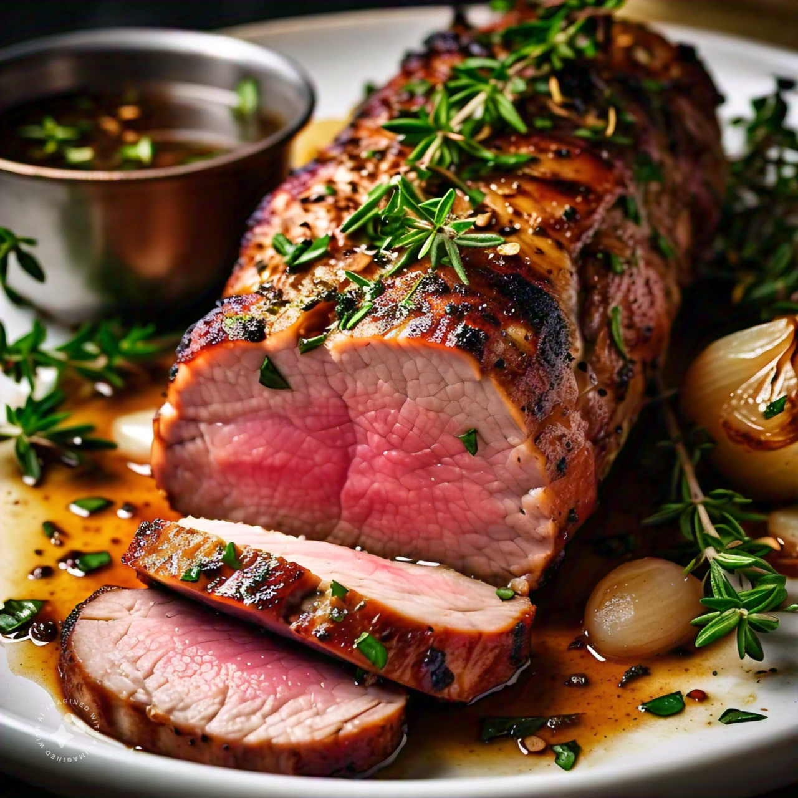

Pork Tenderloin
Description:
A deliciously moist and flavorful pork tenderloin recipe, perfect for a special occasion or a weeknight dinner.
Ingredients:
- 1 (1-1.5 pound) pork tenderloin
- 2 tablespoons olive oil
- 1 tablespoon honey
- 1 tablespoon Dijon mustard
- 1 teaspoon dried thyme
- 1/2 teaspoon garlic powder
- Salt and pepper, to taste
- 1/4 cup chicken broth
- 1/4 cup white wine (optional)
Instructions:
- Preheat the oven to 400°F (200°C).
- Rinse the pork tenderloin and pat dry with paper towels.
- Rub the tenderloin with olive oil, honey, Dijon mustard, thyme, garlic powder, salt, and pepper.
- Heat a large oven-safe skillet over medium-high heat. Sear the tenderloin for 2-3 minutes on each side, or until browned.
- Transfer the skillet to the preheated oven and roast for 15-20 minutes, or until the internal temperature reaches 145°F (63°C).
- While the pork is roasting, prepare the glaze by mixing chicken broth and white wine (if using). Brush the glaze over the pork during the last 5 minutes of roasting.
- Remove the pork from the oven and let it rest for 5-10 minutes before slicing.
- Slice the pork tenderloin and serve with your favorite sides, such as roasted vegetables or mashed potatoes.
Tips:
- Use a meat thermometer to ensure the pork reaches a safe internal temperature.
- Let the pork rest for at least 5 minutes before slicing to retain juiciness.
- Consider using a cast-iron skillet for even heat distribution and a crispy crust.